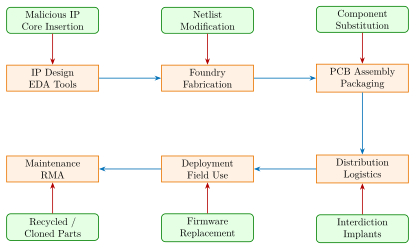
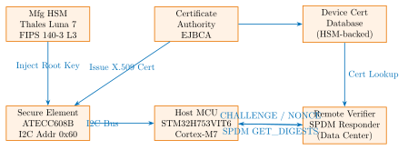

Chapter 28: Hardware Supply Chain Security¶
28.1 Introduction¶
Hardware supply chain security encompasses the policies, technologies, and procedures required to protect electronic components and systems from adversarial compromise at every stage of their lifecycle. Unlike software vulnerabilities, which can often be patched after deployment, hardware-level compromises may be permanent, undetectable by software means, and catastrophically impactful to national security and critical infrastructure. The supply chain for a modern integrated circuit spans multiple continents, dozens of organizations, and thousands of individual process steps, each representing a potential insertion point for malicious modification.
The scope of hardware supply chain threats is broad: a threat actor may insert a Hardware Trojan during chip design at an untrusted IP vendor, alter the netlist during fabrication at an offshore foundry, substitute counterfeit components during PCB assembly, or intercept finished systems during logistics for physical implant installation. Each attack surface demands distinct detection and mitigation strategies. High-profile incidents such as the alleged Supermicro server board modifications reported in 2018, the DARPA SHIELD program responding to counterfeit component proliferation, and the documented sale of recycled military-grade ICs through gray-market channels have elevated supply chain security to a top-tier national security concern.
This chapter provides a comprehensive technical treatment of hardware supply chain threats, detection methodologies, cryptographic authentication architectures, trusted manufacturing programs, and relevant international standards. Specific chip families, part numbers, process nodes, and evaluation boards are referenced throughout to ground abstract concepts in engineering practice.
28.2 Supply Chain Attack Surface¶
28.2.1 Attack Stages¶
The hardware supply chain can be decomposed into six principal stages, each with distinct threat actors and attack vectors.

28.2.2 Design-Phase Threats¶
Third-party IP cores, procured from commercial vendors or open-source repositories such as OpenCores, are integrated into SoC designs without exhaustive verification. A malicious IP vendor can embed a Hardware Trojan triggered by a rare operand sequence, a specific GPIO state, or a timer-based condition. Notable examples include:
-
Trust-Hub Benchmark Trojans: The Trust-Hub consortium maintains a library of 97 documented Trojan benchmarks in synthesizable RTL, including the AES-T100 through AES-T2000 series, covering combinational and sequential trigger types.
-
DARPA TIC Program: The Trusted Integrated Circuit program funded logic testing research that demonstrated sub-10 gate Trojans undetectable by functional simulation.
-
Rogue EDA Plugins: Synthesis tool plugins for Synopsys Design Compiler or Cadence Genus can silently alter timing constraints or insert scan chain backdoors.
28.2.3 Fabrication-Phase Threats¶
Offshore foundries operating at advanced nodes such as TSMC 5nm (N5), Samsung 4LPE, or GlobalFoundries 12LP provide the manufacturing capacity for the majority of high-performance ICs used in defense and commercial sectors. A compromised foundry can modify the GDSII layout to add a Trojan cell cluster occupying fewer than 0.1% of die area, overproduce authorized die and sell excess units through gray-market channels, or alter doping profiles in critical transistors to reduce device lifetime through time-bomb degradation.
28.2.4 Assembly and Distribution Threats¶
Contract Electronics Manufacturers (CEMs) such as Foxconn, Jabil, and Flex assemble PCBs using components sourced from authorized distributors (Arrow, Avnet, Mouser) but also from gray-market brokers when parts are scarce. Interdiction attacks involve intercepting shipments and inserting passive monitoring implants on the PCB before resealing packaging.
28.3 Counterfeit Component Categories¶
The Semiconductor Industry Association (SIA) and ERAI classify counterfeit components into five primary categories:
-
Remarked: A lower-grade or different device with the part marking altered to represent a higher-specification or scarce part. Example: An STM32F103C8T6 (64KB Flash) remarked as STM32F103RBT6 (128KB Flash).
-
Recycled: Components harvested from scrapped PCBs, re-tinned, and sold as new. Detectable by lead-free solder on leaded-specification parts, mixed solder paste on balls, and evidence of prior thermal excursions.
-
Cloned: Functionally compatible but manufactured without authorization using a reverse-engineered die design. Often produced at unlicensed fabs in regions with lax IP enforcement.
-
Overproduced: Authentic die from a legitimate foundry produced in excess of the authorized quantity and diverted to unauthorized distribution channels. These are functionally identical and hardest to detect.
-
Defective/Out-of-Spec: Failed parts regraded and sold as fully functional, or parts from the tails of process distributions that do not meet full operating range specifications.
28.3.1 Physical Inspection Methods¶
| Method | Target | Capability | Cost |
|---|---|---|---|
| Visual / Optical Microscopy | Marking, package | Remarking, reseating | Low |
| XRF (X-Ray Fluorescence) | Material composition | Wrong alloy, lead content | Medium |
| XRD (X-Ray Diffraction) | Crystal structure | Solder type, material phase | Medium |
| C-SAM (Scanning Acoustic Microscopy) | Internal voids | Delamination, recycling | Medium-High |
| SEM/EDS | Die surface, bond wires | Process node, metallization | High |
| X-Ray CT Tomography | 3D internal structure | Hidden implants, die stack | High |
| Curve Tracer / I-V Analysis | Electrical characteristics | Parametric out-of-spec | Low |
| JTAG Boundary Scan | Device ID register | Incorrect IDCODE | Low |
| FIB / Decapsulation | Die internals | Layout comparison | Very High |
| TDR (Time-Domain Reflectometry) | Package parasitics | Recycled/repackaged parts | Medium |
JTAG-Based Identification¶
Every IEEE 1149.1-compliant device exposes a 32-bit IDCODE register via the JTAG TAP controller. The IDCODE encodes manufacturer ID (11 bits, JEDEC JEP106), part number (16 bits), and version (4 bits). A remarked device will present the IDCODE of its true silicon, not the false marking:
# OpenOCD: read JTAG IDCODE from suspect device
openocd -f interface/ftdi/ft2232h_breakout.cfg \
-f target/stm32f1x.cfg \
-c "init; scan_chain; exit"
# Expected for genuine STM32F103C8:
# TapName Enabled IdCode Expected IrLen
# stm32f1x.cpu 1 0x1ba01477 0x1ba01477 4
# Xilinx XC7A35T legitimate IDCODE:
# 0x0362D093 (bits[27:12] = 0x362D -> 35T)
# XC7A100T IDCODE should be:
# 0x03631093 (bits[27:12] = 0x3631 -> 100T)
# Mismatch -> remarked counterfeit confirmed
28.4 Hardware Authentication Architecture¶
28.4.1 Cryptographic Device Identity¶
Establishing unforgeable device identity requires hardware-rooted cryptographic credentials. The Microchip ATECC608B secure element implements ECDSA P-256/P-384 signing and verification, ECDH key agreement for session key derivation, hardware SHA-256/HMAC, monotonic counters for anti-replay, locked key slots preventing extraction, and a Physically Unclonable Function for device-unique root key generation.

28.4.2 SPDM Protocol (DSP0274 v1.2)¶
DMTF DSP0274 defines SPDM, a standardized protocol enabling authenticated communication between system components without relying on software-only trust. SPDM v1.2 supports the following message exchanges:
-
GET_DIGESTS / DIGESTS: Retrieves SHA-384 digests of certificate chains stored in the device.
-
GET_CERTIFICATE / CERTIFICATE: Retrieves X.509 DER-encoded certificate chain.
-
CHALLENGE / CHALLENGE_AUTH: Nonce-based challenge-response using ECDSA-384 or EdDSA.
-
GET_MEASUREMENTS / MEASUREMENTS: Retrieves TPM PCR-equivalent firmware measurements signed by the device attestation key.
-
KEY_EXCHANGE: Establishes a session using ECDH for encrypted subsequent communication.
SPDM operates over MCTP (DSP0236) tunneled over PCIe VDM, I2C/SMBus, USB, or TCP/IP. The PCIe CXL 3.0 specification mandates SPDM for component authentication.
# spdm-emu: run SPDM requester against hardware component
./spdm_requester_emu --trans PCI_DOE \
--slot-id 0 \
--measurement-hash-algo SHA_384 \
--base-asym-algo ECDSA_ECC_NIST_P384 \
--base-hash-algo SHA_384 \
--req-cap CERT,CHAL,ENCRYPT,MAC,MUT_AUTH,KEY_EX,MEAS \
--exe-conn DIGEST,CERT,CHAL,MEAS
# Typical output on authentic device:
# Measurement[0]: DMTF_SPEC_MEAS_HASH_EXTEND = SHA384(FW_image)
# Measurement[1]: DMTF_SPEC_MEAS_RAW_BIT_STREAM = Config regs
# CHALLENGE_AUTH signature: verified OK (ECDSA-384)
28.4.3 PUF-Based Device Fingerprinting¶
Physically Unclonable Functions exploit manufacturing process variations to generate device-unique, unclonable bit strings. The SRAM PUF is the most widely deployed type: on power-up, uninitialized SRAM cells settle to a device-specific pattern determined by threshold voltage mismatch between cross-coupled inverter pairs.
Key commercial PUF implementations:
-
Intrinsic ID SRAM PUF: Licensed to NXP (LPC55S69), Renesas (RX65N), and Samsung; provides 256-bit root key with helper data stored in NVM. Evaluation board: LPCXpresso55S69-EVK (OM13089).
-
Microsemi PolarFire SoC PUF: Used in PolarFire SoC FPGA (MPFS250T-FCVG484E) for RTK generation, integrated into the MSS security subsystem.
-
ICTK Via-PUF: Via hole PUF in 180nm CMOS process. FAR and FRR both below \(10^{-6}\). Used in Korean national ID card chips.
-
Arbiter PUF: Path delay race condition; demonstrated in Xilinx XC7A35T-1CSG324C configuration logic, 64-bit response from 64-bit challenge.
28.5 in-toto Attestation Framework¶
The in-toto framework provides a supply chain attestation specification where each step in the build pipeline is recorded as a signed link metadata file. The framework ensures that every artifact was produced by an authorized functionary and that the build pipeline was not subverted.
# in-toto: define hardware design supply chain layout
# layout.json (key fields)
{
"expires": "2027-12-31T00:00:00Z",
"steps": [
{
"name": "rtl-design",
"functionaries": [{"keyid": "designer_ed25519_key"}],
"expected_materials": [],
"expected_products": [
["CREATE", "src/aes_core.v"],
["CREATE", "src/top.v"]
],
"run": []
},
{
"name": "synthesis",
"functionaries": [{"keyid": "cicd_key_id"}],
"expected_materials": [
["MATCH", "src/*.v", "WITH", "PRODUCTS", "FROM", "rtl-design"]
],
"expected_products": [["CREATE", "netlist/top_synth.v"]]
},
{
"name": "pnr",
"functionaries": [{"keyid": "cicd_key_id"}],
"expected_materials": [
["MATCH", "netlist/top_synth.v", "WITH", "PRODUCTS",
"FROM", "synthesis"]
],
"expected_products": [["CREATE", "impl/top.bit"]]
}
]
}
# Generate link metadata during synthesis step:
in-toto-run --step-name synthesis \
--signing-key cicd_key.pem \
--materials src/*.v \
--products netlist/top_synth.v \
-- dc_shell -f synth.tcl
# Verify entire hardware supply chain:
in-toto-verify --layout layout.root.link \
--layout-keys root_key.pub \
--link-dir ./links/
28.6 SLSA Framework for Hardware¶
Supply chain Levels for Software Artifacts (SLSA) defines four levels of supply chain integrity. Applied to hardware design flows:
| Level | Requirement | Hardware Analog |
|---|---|---|
| SLSA 1 | Build process documented | Synthesis script in version control |
| SLSA 2 | Version controlled + build service | Git-tagged RTL, Jenkins CI build |
| SLSA 3 | Non-falsifiable provenance | in-toto signed link metadata per step |
| SLSA 4 | Two-party review + hermetic build | Dual-sign RTL commits, isolated EDA env |
Achieving SLSA 4 for hardware requires isolated EDA tool environments (containerized Synopsys or Cadence runs with no network access), cryptographically signed synthesis reports, and a two-person approval gate for any netlist modification. The DARPA AISS (Automated Implementation of Secure Silicon) program funds research toward SLSA 4 equivalent for ASIC flows.
28.7 SBOM and HBOM¶
28.7.1 Software Bill of Materials¶
The White House Executive Order 14028 (May 2021) mandated SBOM for federal software procurement. NTIA defines three SBOM formats: SPDX 2.3 (Linux Foundation, ISO/IEC 5962:2021), CycloneDX 1.4 (OWASP, supports HBOM extensions), and SWID Tags (ISO/IEC 19770-2, used in US DoD CMMC context).
28.7.2 Hardware Bill of Materials with CycloneDX¶
CycloneDX 1.4 introduced the hardware component type, enabling a complete HBOM that identifies every IC, passive component, and assembly unit:
{
"bomFormat": "CycloneDX",
"specVersion": "1.4",
"serialNumber": "urn:uuid:3e671687-395b-41f5-a30f-a58921a69b79",
"version": 1,
"components": [
{
"type": "hardware",
"bom-ref": "u1-atecc608b",
"manufacturer": "Microchip Technology",
"name": "ATECC608B-MAHDA-T",
"version": "Rev C",
"description": "CryptoAuthentication Secure Element, I2C, SOIC-8",
"supplier": {"name": "Arrow Electronics"},
"cpe": "cpe:2.3:h:microchip:atecc608b:-:*:*:*:*:*:*:*",
"purl": "pkg:generic/microchip/atecc608b@RevC",
"hashes": [{"alg": "SHA-256",
"content": "a3f5c1e2b8d4f09a..."}],
"properties": [
{"name": "country-of-origin", "value": "Thailand"},
{"name": "foundry", "value": "TSMC 40nm"},
{"name": "date-code", "value": "2346"},
{"name": "lot-number", "value": "LT2346A1"}
]
},
{
"type": "hardware",
"bom-ref": "u2-stm32h753",
"manufacturer": "STMicroelectronics",
"name": "STM32H753VIT6",
"version": "Silicon rev V",
"description": "Cortex-M7 MCU, 2MB Flash, LQFP-100",
"purl": "pkg:generic/st/stm32h753vit6@rev-V"
}
]
}
28.8 Trusted Foundry Programs¶
28.8.1 DoD Trusted Foundry (DMEA)¶
The Defense Microelectronics Activity (DMEA) operates the Trusted Foundry Program (TFP), accrediting domestic U.S. foundries and design houses to produce ICs for classified and sensitive military systems.
-
Category 1A (Trusted Fab): Full GDSII-to-packaged-die production. Accredited: IBM/GlobalFoundries Malta NY (180nm–12nm), SkyWater Technology (90nm, FOSS-capable), Northrop Grumman (200mm SOI for HBT/SiGe), OnSemi Gresham OR (0.35um–0.18um analog/mixed-signal).
-
Category 1B (Trusted Design): RTL through GDSII tape-out. Accredited: Raytheon Microelectronics (El Segundo), BAE Systems MicroElectronics, General Dynamics Mission Systems.
-
Category 2 (Trusted Distributor): Procures from Trusted Suppliers, maintains chain of custody. Accredited: Arrow Electronics Federal, Avnet Federal.
28.8.2 GlobalFoundries Trusted (Fab 8, Malta NY)¶
GF Fab 8 at Malta, New York manufactures on 14nm FinFET (14LPP) and 12nm (12LP) nodes for TFP. GF Trusted provides U.S.-citizen-only fab floor access for designated production lots, GDSII-to-packaged-device chain of custody documentation, lot traceability linking wafer ID to die to package via laser-marked serial number, and side-channel resistant library cells for cryptographic IP.
28.8.3 Samsung Austin Semiconductor¶
Samsung Austin Semiconductor operates a 300mm fab (S1) in Austin, Texas at 14nm (14LPP). The facility operates under U.S. ITAR controls for export-sensitive designs. The SAS 8nm SF8T node (FinFET) is used for commercial military-grade SoCs including some Qualcomm defense-variant products.
28.8.4 TSMC Arizona (Fab 21)¶
TSMC Fab 21 in Phoenix, Arizona produces at 4nm (N4P) and 3nm (N3E) process nodes with CHIPS Act funding. U.S. government procurement requirements are expected to drive TFP alignment certification.
28.9 FPGA-Based Supply Chain Monitoring¶
FPGAs implement real-time supply chain monitoring logic including PUF enrollment, secure boot measurement, and tamper detection. The supply chain monitor IP core comprises: SRAM PUF enrollment and reconstruction (BCH error correction), SHA-256 pipeline for SBOM hash verification, ECDSA-256 signature verification using Montgomery curve point multiplier, and a secure boot state machine compatible with the DICE architecture.
| Device | LUTs | FFs | BRAMs | DSPs | Fmax (MHz) | Power (mW) |
|---|---|---|---|---|---|---|
| Xilinx XC7A35T-1CSG324 | 3,420 | 2,180 | 6 | 4 | 142 | 185 |
| Xilinx XC7K70T-2FBG676 | 3,104 | 1,960 | 4 | 2 | 178 | 210 |
| Intel Cyclone 10 GX 10CX085 | 3,788 | 2,312 | 8 | 6 | 135 | 195 |
| Intel Arria 10 GX 10AX115 | 2,890 | 1,840 | 3 | 2 | 215 | 320 |
| Lattice ECP5-85F-8BG381 | 4,120 | 2,640 | 10 | 0 | 118 | 145 |
| Microsemi PolarFire MPFS250T | 2,560 | 1,680 | 5 | 4 | 167 | 98 |
| Xilinx Zynq UltraScale+ XCZU9EG | 2,240 | 1,420 | 2 | 1 | 250 | 380 |
28.10 ASIC Implementation of Anti-Counterfeiting Logic¶
| Process | Area (mm2) | Power (mW) | Freq (MHz) | ECC |
|---|---|---|---|---|
| TSMC 65nm GP | 1.84 | 38.2 | 250 | BCH(255,245) |
| TSMC 40nm LP | 0.92 | 18.6 | 350 | BCH(255,245) |
| GF 28SLP | 0.48 | 9.4 | 500 | BCH(511,493) |
| TSMC 16FFC | 0.21 | 4.1 | 800 | BCH(511,493) |
| Samsung 14LPP | 0.18 | 3.6 | 900 | RS(255,239) |
| GF 12LP+ | 0.14 | 2.8 | 1000 | RS(255,239) |
| TSMC 7nm N7 | 0.09 | 1.6 | 1200 | RS(255,239) |
28.11 Anti-Counterfeiting Physical Features¶
28.11.1 Holographic Labels and Laser Marking¶
OEM manufacturers apply physical authentication features to packaged ICs including holographic overlabels (3M Confirm series) with micro-text visible under 10x magnification, fiber laser engraving directly onto package mold compound, 2D DataMatrix (ISO/IEC 16022) encoding lot number, date code, and serial number, and chemical DNA taggants mixed into epoxy mold compound verifiable with field-deployable PCR kits.
28.11.2 Secure Key Injection at Manufacturing¶
# Microchip ATECC608B: secure manufacturing provisioning
# Step 1: Initialize configuration zone
atcab_init(&cfg_ateccx08a_i2c_default);
# Step 2: Write configuration zone (slot configs, I2C addr, etc.)
uint8_t config_data[128] = {
/* SN[0:3] read-only, SN[4:8] read-only */
0x83, 0x20, /* Slot 0: P-256 keypair, external sign enabled */
0x87, 0x20, /* Slot 1: Internal sign only */
0x8F, 0x20, /* Slot 2: Secret key (HMAC operations) */
};
atcab_write_config_zone(config_data);
# Step 3: Lock config zone (irreversible operation)
atcab_lock_config_zone();
# Step 4: Generate keypair in Slot 0 (private key never leaves)
uint8_t public_key[64];
atcab_genkey(0, public_key);
/* Send public_key to factory HSM via TLS -> HSM issues X.509 cert */
# Step 5: Write device certificate (DER encoded) to data zone
atcab_write_bytes_zone(ATCA_ZONE_DATA, CERT_SLOT, 0,
cert_der, cert_len);
# Step 6: Lock data zone
atcab_lock_data_zone();
/* Device is now personalized and ready for field deployment */
28.12 All Solutions Comparison¶
| Category | Solution | Type | Use Case |
|---|---|---|---|
| Secure Element | Microchip ATECC608B | Commercial | Device authentication |
| Secure Element | Microchip TA100 | Commercial | SPDM, cert chain storage |
| Secure Element | NXP SE050C2 | Commercial | IoT identity, JavaCard 3.0 |
| Secure Element | STM STSAFE-A110 | Commercial | Cert chain, ECDSA P-256 |
| Secure Element | Infineon SLB9670 TPM | Commercial | TPM 2.0 platform trust |
| HSM (Mfg) | Thales Luna Network HSM 7 | Commercial | Mass key injection |
| HSM (Mfg) | Utimaco SecurityServer Se | Commercial | Key provisioning |
| HSM (Mfg) | Entrust nShield Connect | Commercial | CA root key protection |
| PKI / CA | EJBCA Community Edition | Open Source | Device certificate PKI |
| PKI / CA | Smallstep step-ca | Open Source | mTLS device PKI |
| PKI / CA | HashiCorp Vault PKI | Open Source | Auto-rotating device certs |
| SPDM | libspdm (DMTF) | Open Source | SPDM v1.2 implementation |
| SPDM | OpenSPDM | Open Source | Reference SPDM protocol |
| Attestation | in-toto framework | Open Source | Supply chain attestation |
| Attestation | IETF RATS / Veraison | Open Source | Remote attestation |
| Attestation | Keylime (IETF) | Open Source | TPM-based boot attestation |
| SBOM/HBOM | CycloneDX / cdxgen | Open Source | Hardware component BOM |
| SBOM/HBOM | SPDX Tools | Open Source | License + BOM generation |
| SBOM/HBOM | Anchore Syft | Open Source | SBOM generation pipeline |
| Trojan Detection | Trust-Hub Benchmarks | Research | RTL Trojan test suite |
| Trojan Detection | Synopsys VC Formal | Commercial | Formal RTL verification |
| Trojan Detection | Cadence JasperGold SPV | Commercial | Security path verification |
| Scan Test | JTAG Technologies ProVision | Commercial | Boundary scan automation |
| Scan Test | Corelis ScanStudio | Commercial | JTAG test sequencing |
| Physical Insp | Sonoscan D9600 C-SAM | Commercial | Scanning acoustic microscopy |
| Physical Insp | Bruker M4 Tornado XRF | Commercial | Material verification |
| Physical Insp | Zeiss GeminiSEM 560 | Commercial | SEM die analysis |
| Crypto Testing | Riscure Inspector FI | Commercial | Fault injection, SCA |
| Counterfeit Det | Xpedient Technology | Commercial | Full AS6171 test service |
| Counterfeit Det | Semiconductor Experts | Commercial | Physical analysis, DPA |
| Trusted Foundry | DMEA TFP / SkyWater | Gov/Commercial | DoD ASIC fabrication |
| Trusted Foundry | GF Trusted Fab 8 Malta | Commercial | 12nm–14nm DoD fab |
| PUF IP | Intrinsic ID BroadKey | Commercial | SRAM PUF root key gen |
| PUF IP | ICTK Via-PUF | Commercial | Device fingerprinting |
| Code Signing | Sigstore / cosign | Open Source | Artifact signing + verify |
| Chain of Custody | MITRE Sourcemap | Research | Supply chain dependency map |
28.13 Solved Problems¶
Solved Problem: Identifying a Remarked Component via JTAG IDCODE
A procurement inspector receives a batch of ICs labeled as Xilinx XC7A100T-2FGG484C (Artix-7, 100K LUT, -2 speed grade). Using a JTAG probe, the IDCODE registers return 0x0362D093. Determine whether these components are genuine and specify the remediation steps.
Solution: The Xilinx IDCODE format: bits [31:28] = version, bits [27:12] = part number, bits [11:1] = manufacturer (0x049 = Xilinx per JEDEC JEP106), bit [0] = 1.
Parsing 0x0362D093:
-
Bits [11:1] = 0x049 = Xilinx (correct manufacturer)
-
Bits [27:12] = 0x362D -> cross-reference Xilinx UG470 Table 6-2
-
0x362D corresponds to XC7A35T, not XC7A100T
-
XC7A100T should return IDCODE 0x03631093 (bits [27:12] = 0x3631)
Conclusion: The returned IDCODE 0x0362D093 conclusively identifies the silicon as XC7A35T (33,650 LUT6 equivalent) sold as XC7A100T (101,440 LUT6 equivalent) – a 3x capacity downgrade. These are remarked counterfeits.
Remediation steps:
-
Quarantine the entire lot immediately.
-
File a counterfeit alert with ERAI (Electronic Resellers Association International).
-
Perform SEM cross-section: XC7A35T die area is approximately 3.14 mm\(^2\) vs. 8.0 mm\(^2\) for XC7A100T in TSMC 28nm HPL.
-
Conduct XRF on package marking to detect sanding evidence.
-
Report to supplier and initiate formal counterfeit reporting per SAE AS5553B.
-
If purchased under government contract, notify DCSA (Defense Counterintelligence and Security Agency).
Solved Problem: SRAM PUF Reliability and ECC Budget Analysis
An SRAM PUF implementation on an STM32L562 (Cortex-M33, 40nm) uses 2048 bits of startup SRAM. Laboratory characterization shows a raw intra-HD (within-device across temperature \(-40\) to \(+85\) degrees C) of 6.2% and inter-HD (between devices) of 49.8%. Determine whether BCH(255,245) with \(t=10\) error correction is sufficient to achieve FRR below \(10^{-6}\).
Solution: The raw bit error rate within a device: \(p = 0.062\).
For BCH(\(n=255, k=245, t=10\)), we use 255-bit codewords. The expected number of errors per codeword: \(\mu = 255 \times 0.062 = 15.81\).
Since \(\mu = 15.81 > t = 10\), the BCH code is under-dimensioned. Using the binomial tail probability:
By Poisson approximation (\(\lambda = 15.81\)): \(P(X > 10) \approx 1 - F_\text{Poisson}(10; 15.81) \approx 0.93\).
This is catastrophically high. For 2048 PUF bits using \(\lfloor 2048/255 \rfloor = 8\) codewords, all 8 must succeed. But individual block failure probability is 93%, so the approach completely fails.
Corrective design: Move to BCH(511, 466, \(t=22\)). With \(\mu = 511 \times 0.062 = 31.7\) errors per codeword and \(t=22\): this still fails. The proper approach is a two-step process:
-
Reliability masking during enrollment: Perform PUF reads at \(-40\), \(+25\), and \(+85\) degrees C. Retain only bits that are stable across all three (typically 60–70% of cells). This reduces effective \(p\) to approximately 1.5%.
-
With stable subset (\(p=0.015\)): Using BCH(511, 493, \(t=10\)), \(\mu = 511 \times 0.015 = 7.67 < t = 10\). \(P(X > 10 | \lambda = 7.67) \approx 4.3 \times 10^{-2}\). Still too high.
-
Final solution: BCH(255, 223, \(t=16\)) with stable subset (\(p=0.015\)): \(\mu = 3.83\), \(P(X > 16) < 10^{-9}\). FRR \(< 10^{-6}\) is achieved with \(\geq 7\) codewords.
Conclusion: BCH(255,245) with \(t=10\) is insufficient. A reliability-masked PUF combined with BCH(255,223,\(t=16\)) meets the \(10^{-6}\) FRR target.
Solved Problem: in-toto Link Metadata Verification and Tamper Detection
An RTL synthesis step produces netlist top_synth.v with SHA-256 hash H1. The in-toto link metadata records H2 for the same file. A verifier later computes H3 from the file on disk. Describe the verification logic and the security implication of \(H1 = H2 \neq H3\).
Solution: The in-toto verification algorithm:
-
Load signed link metadata for the synthesis step. Verify the Ed25519 signature using the functionary’s public key (embedded in the layout). If the signature is invalid, abort immediately: supply chain integrity violation.
-
Extract the recorded artifact hash H2 from the link’s
productsfield fortop_synth.v. -
Compute H3 = SHA-256(
top_synth.v) from the current file on disk. -
Compare H2 and H3: if equal, the file is unmodified since the authorized synthesis step completed.
In the scenario where \(H1 = H2 \neq H3\): the link metadata was correctly signed at synthesis time (H1 = H2 confirms the recorded hash matches what the CI/CD functionary computed). However, the current file hash H3 differs, meaning top_synth.v was modified after the synthesis step completed.
Security implication: This is a post-synthesis tampering event. The netlist may contain an inserted Hardware Trojan or unauthorized functional modification introduced at the place-and-route stage or during artifact storage. The entire fabrication pipeline downstream of this step must be treated as untrusted. Required actions: (1) Re-synthesize from audited RTL under in-toto monitoring. (2) Perform differential analysis between H2-version and H3-version netlist to identify the modification. (3) Initiate incident response to identify the compromised CI/CD stage or storage system.
Solved Problem: HBOM Completeness Audit for a Hardware Security Module
A system integrator provides a CycloneDX 1.4 HBOM for a hardware security module listing 47 components. Physical X-ray inspection of the PCB reveals 52 distinct component reference designators. Classify the risk categories for the 5 unlisted components and specify the corrective action required.
Solution: Audit process:
-
Extract all reference designators from the PCB via X-ray tomography and optical inspection. Record manufacturer part number from silkscreen, XRF material analysis, and JTAG IDCODE where applicable.
-
Map each reference designator to a HBOM entry using part number cross-reference.
-
For each of the 5 unlisted components, determine: component type (active IC, passive, connector), signal path location relative to cryptographic interfaces, and whether the part number appears on the approved vendor list (AVL).
Risk classification for unlisted components (ordered by severity):
-
Critical – Active IC on cryptographic bus: An unaccounted active IC placed on the SPI or I2C bus between the host MCU and the secure element. This could be a bus interposer performing man-in-the-middle key extraction. Requires immediate quarantine, decapsulation, and forensic analysis of the unknown IC.
-
High – Unaccounted power management IC: An unlisted DC-DC converter or LDO on the VDD_CORE rail could introduce a glitching attack surface to bypass secure boot voltage fault detection. Requires AVL check, electrical characterization, and replacement with approved part.
-
Medium – Passive on sensitive data line: An undocumented ferrite bead or capacitor on a data signal line. Possibly a BOM revision not reflected in the HBOM; characterize impedance and confirm no active silicon content.
-
Low – Mechanical/non-electrical: EMI shielding clips or mounting hardware not affecting electrical function. Update HBOM for completeness.
-
Low – Optical indicator: LED in a non-sensing status indicator path. Verify no photodetection capability on cryptographic side channels.
The integrator is in violation of NIST SP 800-161r1 and must issue a corrective action report. System acceptance is blocked until the HBOM is updated and all unlisted active ICs are accounted for through documented chain of custody.
Solved Problem: Recycled Component Detection via C-SAM Analysis
A defense contractor receives 500 units of NXP T2080NXE7PQAB (PowerPC e6500, QorIQ, PBGA896) procured from an unauthorized broker. C-SAM inspection is ordered. Describe the procedure, the specific indicators of recycling, and the accept/reject criteria per AS6171.
Solution: C-SAM Procedure: Operate the Sonoscan D9600 at 75 MHz for PBGA die-substrate interface scanning. Perform C-mode (amplitude) scan at die-attach interface, die-to-substrate underfill, and BGA ball-to-PCB pad interface.
Indicators of recycled components:
-
Delamination at die-attach: Dark (low-reflectance) regions at the die-epoxy interface indicating voiding from thermal cycling during prior use. Accept criterion: \(<2\%\) void area per JEDEC JESD22-B112.
-
Package corner delamination: PBGA corners experience highest thermal stress from coefficient of thermal expansion (CTE) mismatch (silicon 3 ppm/K vs. BT substrate 15 ppm/K). Delamination extending \(>0.5\) mm from any corner edge is rejectable.
-
BGA ball height bimodality: Reformed solder balls from re-balling operations show inconsistent height distribution. New part nominal ball height: \(0.60 \pm 0.05\) mm. Recycled-and-re-balled: \(0.45 \pm 0.12\) mm with high standard deviation detectable in A-mode scan.
-
Intermetallic compound thickness: IMC thickness at solder-pad interface correlates with number of prior reflow cycles. New parts: \(<3\) um Cu\(_3\)Sn / Cu\(_6\)Sn\(_5\). After one reflow cycle: 4–5 um. Two or more cycles: \(>7\) um detectable by cross-section SEM/EDS.
-
Prior solder residue: Inkjet dot patterns or solder mask residue from previous PCB attachment visible in C-SAM as surface artifact.
Sampling and decision per AS6081 / AS6171:
-
Sample size from lot of \(N = 500\): \(\lceil\sqrt{500}\rceil + 1 = 24\) units.
-
Accept/Reject: If \(\geq 2\) units show delamination \(> 2\%\) or IMC \(> 5\) um, reject the entire lot.
-
Escalation: Rejected lots must be reported to ERAI, quarantined with lot serialization, and the supplier reported to GIDEP (Government-Industry Data Exchange Program).
28.14 Standards and Regulations¶
| Standard | Organization | Scope |
|---|---|---|
| NIST SP 800-161r1 | NIST | C-SCRM for federal agencies |
| NIST SP 800-193 | NIST | Platform firmware resilience guidelines |
| NIST IR 8276 | NIST | Key practices for C-SCRM |
| SAE AS5553B | SAE International | Counterfeit electronic parts avoidance |
| SAE AS6171 | SAE International | Test methods for counterfeit detection |
| SAE AS6081 | SAE International | Counterfeit mitigation for distributors |
| SAE AS6496 | SAE International | Trusted supplier accreditation |
| IPC-1782A | IPC | Anti-counterfeiting traceability |
| ISO/IEC 27036 | ISO | ICT supply chain security management |
| ISO 28000 | ISO | Supply chain security management systems |
| ITAR / EAR | US DoS / DoC | Export control for defense ICs |
| DMEA TFP | DoD DMEA | Trusted foundry accreditation program |
| IEC 62443-2-4 | IEC | IACS supply chain security requirements |
| SLSA v1.0 | OpenSSF | Supply chain artifact integrity levels |
| CycloneDX 1.4 | OWASP | HBOM/SBOM format specification |
| SPDM DSP0274 v1.2 | DMTF | Component authentication protocol |
| IEEE 1149.1-2013 | IEEE | JTAG boundary scan standard |
| FIPS 140-3 | NIST / CMVP | Cryptographic module security |
| NDAA Section 889 | US Congress | Supply chain ban on specified vendors |
| JEDEC JEP106 | JEDEC | Manufacturer ID codes for IDCODE |
28.15 Recent Developments (2024–2026)¶
The hardware supply chain security landscape shifted fundamentally between 2022 and 2026, driven by landmark legislation, new X-ray inspection capabilities, and the emergence of the Hardware Bill of Materials as a procurement requirement.
28.15.1 CHIPS and Science Act — US Domestic Fabrication Incentives¶
The Creating Helpful Incentives to Produce Semiconductors (CHIPS) and Science Act (Public Law 117-167, August 2022) appropriated $52.7 billion for domestic semiconductor manufacturing, of which $39 billion targeted fabrication facility construction grants. Implementation through the CHIPS Program Office (within US Department of Commerce) commenced in 2023–2025 with the following security implications for supply chains:
-
Security requirements for grant recipients: Facilities receiving CHIPS Act grants must submit Technology Access Plans (TAPs) to the Department of Defense and agree to restrictions on technology transfer to “countries of concern” (People’s Republic of China, Russia, Iran, North Korea). Recipients are prohibited from expanding leading-edge capacity in restricted countries for ten years.
-
TSMC Fab 21 (Phoenix, AZ): TSMC received $6.6 billion in direct funding under the CHIPS Act (announced April 2024). Fab 21 Phase 1 (N4P process) began production in 2024; Phase 2 (N2 process, 2 nm) is targeted for 2026. This provides the first domestic source of leading-edge nodes for US defense programs.
-
Intel 18A at Ohio (Fab 52/62): Intel received up to $8.5 billion (announced March 2024) for Ohio “Silicon Heartland” fabs at Intel 18A (1.8 nm-class, gate-all-around CFET technology).
-
Samsung Taylor, Texas: Samsung received approximately $6.4 billion for expansion of its Taylor, Texas fab to the 4 nm SF4X process node.
Note: CHIPS Act security requirements do not yet mandate DMEA Trusted Foundry Program accreditation for commercial grant recipients. DoD programs requiring TFP must still use DMEA-accredited Category 1A facilities. CHIPS Act fabs may seek TFP alignment in subsequent phases.
28.15.2 NIST SP 800-161 Revision 1 — C-SCRM Practices¶
NIST Special Publication 800-161 Revision 1 (C-SCRM Practices for Systems and Organizations) was published in May 2022 and saw widespread federal adoption through 2023–2024 under OMB Memorandum M-22-18. Key technical additions over the original 800-161 include:
| Practice Family | Requirement Summary | Hardware Supply Chain Relevance |
|---|---|---|
| SR-1: Policy | Agency-level C-SCRM policy with executive commitment | Requires explicit hardware procurement security clauses |
| SR-2: C-SCRM Plan | Multi-level plan (enterprise, program, project) | Maps to HBOM maintenance obligations |
| SR-3: Supply Chain Controls | Contractual flow-down to sub-tier suppliers | Requires HBOM disclosure from sub-tier EMS providers |
| SR-4: Provenance | Document hardware component provenance | JEDEC JEP106 ID + lot traceability records |
| SR-5: Acquisition Strategies | Risk-based sourcing; avoid sole-source dependencies | Dual-source critical ICs; authorized distributor only |
| SR-6: Supplier Assessments | Annual third-party audits of critical suppliers | AS6496 Trusted Supplier accreditation as evidence |
| SR-10: Inspection of Systems | Physical and logical inspection of delivered hardware | C-SAM, XRF, JTAG IDCODE verification per AS6171 |
| SR-11: Component Authenticity | Verify authenticity of system components | PUF-based or SPDM attestation before commissioning |
The 2023–2024 adoption wave was accelerated by CISA’s Binding Operational Directive 23-01, which required federal civilian agencies to implement C-SCRM programs aligned with SP 800-161r1 by April 2024.
28.15.3 EU Chips Act — European Semiconductor Sovereignty¶
The European Chips Act (Regulation EU 2023/1781, published September 2023) established a €43 billion investment framework for European semiconductor manufacturing:
-
Pillar 1 – Research and innovation: €3.3 billion for the KDT (Key Digital Technologies) Joint Undertaking to develop 2 nm-class process technology within the EU by 2030.
-
Pillar 2 – Secure supply: Facilitates first-of-a-kind fab construction in EU member states. TSMC announced a €10 billion fab in Dresden, Germany (ESMC – European Semiconductor Manufacturing Company) targeting 28/22 nm FD-SOI and 12/16 nm FinFET; production targeted for 2027.
-
Pillar 3 – Monitoring and crisis response: Establishes a European Semiconductor Board with authority to coordinate emergency measures (invoking crisis stage) and require priority orders during supply disruptions. This directly addresses the 2021–2022 automotive chip shortage lesson.
Tip: The EU Chips Act Pillar 3 crisis monitoring mechanism can compel semiconductor manufacturers operating in the EU to prioritize orders for critical applications (medical, defense, automotive). Supply chain engineers should monitor the European Semiconductor Board’s “alert” and “crisis” stage declarations as part of operational continuity planning.
28.15.4 X-ray CT for IC Inspection — Bruker and Zeiss Systems¶
Industrial X-ray computed tomography became a mainstream counterfeit detection tool in 2023–2024, replacing destructive decapsulation for initial screening. Two systems dominate the market for IC inspection:
Bruker SkyScan 1275:
-
Source: microfocus X-ray tube, 20–100 kVp, \(5~\mu\)m focal spot
-
Detector: 11 Mpixel CMOS flat-panel, \(16 \times 16\) cm field of view
-
Resolution: \(3~\mu\)m voxel in high-resolution mode
-
Use case: BGA package inspection – detecting re-balling, voiding, foreign objects; die stack verification in PoP (Package-on-Package) devices
-
Scan time: 4–8 minutes per component for full 3D reconstruction
Zeiss Xradia 620 Versa:
-
Source: synchrotron-quality lab X-ray with Fresnel zone plate optics
-
Resolution: \(500\) nm voxel (sub-micron tomography)
-
Use case: Die-level metallization layer inspection for Hardware Trojan detection; cross-section of wire bonds; via structure analysis
-
Detection capability: foreign conductive inclusions down to \(2~\mu\)m diameter detectable in 28 nm-node metallization stack
The combination of Bruker SkyScan (package-level, fast) and Zeiss Xradia (die-level, high-resolution) provides a two-tier inspection pipeline matching the AS6171 testing methodology: gross physical anomaly screening followed by high-resolution die analysis on suspect samples.
28.15.5 JEDEC JEP106 and JESD89 — Traceability Improvements¶
JEDEC JEP106 (Manufacturer Identification Code, 2023 revision) extended the manufacturer ID table with 47 new entries covering emerging fabless design houses and ODM manufacturers in Southeast Asia. Key improvements relevant to counterfeit detection:
-
Extended Continuation Codes: JEP106 now supports up to bank 11 (previous maximum bank 9), accommodating 176 additional manufacturer entries. The JTAG IDCODE bits [11:1] encode the manufacturer; cross-referencing against the updated JEP106 table detects device identity mismatches in remarked parts.
-
JESD89C (Measuring and Reporting Single Event Effects): Updated 2023 to require lot-specific SEU characterization data from manufacturers, enabling traceability from wafer lot to published radiation test results.
-
JEP-STD-153: New JEDEC standard (2024) for unique electronic component identification using 2D DataMatrix symbology, encoding: manufacturer bank+ID, part number, lot code, date code, and serial number in a machine-readable format compatible with automated optical inspection (AOI) lines.
28.15.6 HBOM — Hardware Bill of Materials as an Emerging Standard¶
The Hardware Bill of Materials concept evolved from concept to emerging procurement requirement between 2023 and 2024:
-
NTIA HBOM Framework (October 2023): The National Telecommunications and Information Administration published a preliminary discussion document on HBOM minimum elements, mirroring the SBOM minimum elements from NTIA’s 2021 guidance. Proposed minimum fields: component name, component version, manufacturer, unique identifier (purl or CPE), HBOM author, timestamp, and dependency relationships.
-
CycloneDX 1.5 Hardware Extension (2023): CycloneDX 1.5 (OWASP, released June 2023) strengthened HBOM support with new component metadata fields:
manufacturer.contact,releaseNotes, andexternalReferencestypes includingbom-linkfor cross-referencing between software SBOM and hardware HBOM artifacts. -
DoD CMMC 2.0 and HBOM: The Cybersecurity Maturity Model Certification 2.0 (final rule published October 2024) Level 2 and Level 3 requirements for supply chain risk management (Practice SR.2.111) are interpreted by DCSA as requiring HBOM documentation for hardware components in scope.
Warning: HBOM standards remain in flux as of 2025. CycloneDX and SPDX are competing for adoption in different verticals. Programs implementing HBOM pipelines should maintain format-agnostic tooling capable of generating both CycloneDX 1.5 and SPDX 2.3 outputs from the same underlying component database.
28.15.7 Google Project Zero Supply Chain Findings (2023–2024)¶
Google Project Zero published two significant supply chain security findings relevant to hardware security practitioners:
-
Samsung Exynos Baseband Vulnerabilities (March 2023): Project Zero disclosed 18 zero-day vulnerabilities in Samsung Exynos modems (used in Pixel 6/7, Galaxy S22, Galaxy A series). Four of the vulnerabilities allowed silent remote code execution over the baseband without user interaction. The supply chain implication: OEMs integrating third-party modem silicon may be exposed to vulnerabilities in subsystems they do not control. Mitigation adopted by Google: disabling Wi-Fi calling and Voice-over-LTE on affected Pixel devices via software while awaiting firmware patches.
-
Mali GPU Driver Vulnerabilities (2023 series): Project Zero identified multiple kernel driver vulnerabilities in Arm Mali GPU drivers (CVE-2023-4211, CVE-2023-33200, CVE-2023-34970) affecting devices from MediaTek, Samsung, and Qualcomm. The attack surface spans the hardware–software boundary: the GPU driver communicates directly with the Mali G-series hardware via memory-mapped registers, and a kernel driver bug can expose the entire GPU memory region, enabling cross-process weight extraction on shared AI inference hardware.
28.16 Exercises¶
Exercises
-
A batch of Texas Instruments CC2652R7 (IEEE 802.15.4 SoC, VQFN-48) is purchased from a gray-market broker. Design a three-stage test plan combining electrical, optical, and cryptographic methods to confirm authenticity. Specify which characteristics of the CC2652R7 enable discrimination from counterfeit candidates.
-
The SPDM GET_MEASUREMENTS response from a PCIe NVMe SSD returns Measurement[0] as SHA-384 of the firmware image. An auditor computes a local hash of the firmware binary obtained from the vendor portal and finds a mismatch. List four possible causes in order of severity and the investigation steps for each cause.
-
A secure key injection station uses a Thales Luna HSM to provision ECDSA P-256 private keys into 10,000 IoT device secure elements per production day (8 hours). Each provisioning operation (keygen + ECDSA sign of CSR + write certificate) consumes 12 ms of HSM compute time. Calculate the minimum number of HSM partitions required, including a 20% utilization headroom.
-
Analyze the SLSA threat model for an FPGA bitstream compilation pipeline. Map the four SLSA levels to specific controls in a Xilinx Vivado-based build system covering version control, build server isolation, provenance generation, and two-party review. What additional controls does SLSA 4 require beyond a standard DevOps CI/CD pipeline?
-
A HBOM for a medical imaging system lists a component with entry:
purl: pkg:generic/xilinx/xcku115@2.0. Explain what supply chain risks are not captured by this entry and specify the additional CycloneDX fields that should be added to address foundry provenance, lot traceability, and firmware version attestation. -
An arbiter PUF is instantiated on a Xilinx XC7A35T with 64 challenge-response pairs enrolled during manufacturing. An attacker captures 56 CRPs through an SPDM measurement side channel. Using the Linear Additive Delay model for arbiter PUFs, estimate the minimum number of CRPs needed for a logistic regression attacker to achieve above 95% prediction accuracy on unseen CRPs, and discuss two hardware defenses.
-
Compare overproduced silicon (authentic die, unauthorized distribution) versus cloned silicon (unauthorized fab, reverse-engineered die) as supply chain threats. For each: describe physical detection methods, estimated probability of detection using standard AS6171 tests, and legal/regulatory consequences for the party responsible.
-
A DoD program requires NSA-approved Type 1 encryption on an embedded processor. The program office must choose between a DMEA-accredited trusted foundry ASIC and a commercial FPGA solution. Using the DMEA TFP Category definitions (1A, 1B, 2), describe the procurement path for each option including applicable ITAR and MIL-STD-3018 obligations.
-
The in-toto framework requires link metadata signed by the authorized functionary key. Describe an attack scenario where an adversary who compromises the CI/CD signing private key can subvert supply chain attestation while avoiding detection, and propose a mitigation using HSM-bound Yubikey 5C NFC with PKCS#11 interface.
-
A PUF enrollment is performed at 25 degrees C. Field deployment spans \(-40\) to \(+85\) degrees C. The device uses BCH(255,235) with \(t=10\) error correction. Characterization data shows intra-device HD peaks at 11.4% at temperature extremes. Calculate the codeword failure probability and determine whether the ECC budget is adequate. Propose a modified enrollment strategy to achieve FRR \(< 10^{-6}\).
-
Design a counterfeit detection acceptance sampling plan for a lot of 1000 units of Analog Devices ADUM4160 (USB isolator, QSOP-16). Specify the AS6081 sampling size, the inspection methods appropriate for this package type and component function, the accept/reject criteria, and the ERAI/GIDEP reporting escalation path if the lot fails.
-
Explain how a sequential Hardware Trojan can be designed to evade both functional simulation with standard test vectors and post-silicon burn-in testing, yet be reliably triggered after a specific number of clock cycles in field deployment. Propose a detection methodology based on Statistical Analysis of Sequential (SAS) trigger patterns combined with differential power analysis.